Practices for Lesson 14: Performing Database Backups
2020.01.29 BoobooWei
[TOC]
实践14:概览
Practices for Lesson 14: Overview
In these practices, you will create backups of your database so that you can recover from various types of failures.
在这些实践中，您将创建数据库备份，以便从各种类型的故障中恢复。
实践14-1:备份控制文件
Practice 14-1: Backing Up the Control File
Overview
In this practice, you back up your control file to a trace file, creating a file of SQL commands that can be used to re-create the control file.
Assumptions
Practices for lesson 13 have been successfully completed.
在这种实践中，您将控制文件备份到一个跟踪文件，创建一个SQL命令文件，可用于重新创建控制文件。
假设：第13课的练习已经成功完成。
Task
Launch Enterprise Manager Cloud Control and log in as the ADMIN user.
Navigate to the orcl database home page.
Select Administration > Storage > Control Files.
Log in to the orcl database with your named credential.
On the Control Files page, click Backup to Trace.
An update message is displayed. Click OK.
You can also perform a control file back up to trace by executing a SQL command. Log in to SQLPlus as the DBA1 user and execute the ALTER DATABASE BACKUP CONTROLFILE TO TRACE command. Exit from SQLPlus.
Navigate to the /u01/app/oracle/diag/rdbms/orcl/orcl/trace directory and view the end of the alert log to verify the creation of the trace files and the names of the files.
Practice
启动企业管理器云控制，以ADMIN用户登录。
导航到数据库主页。
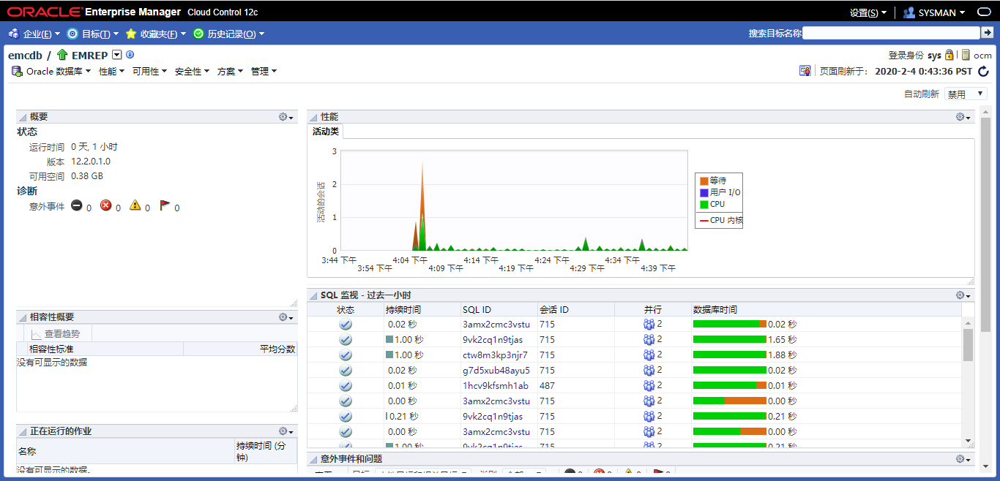
选择管理>存储>控制文件。
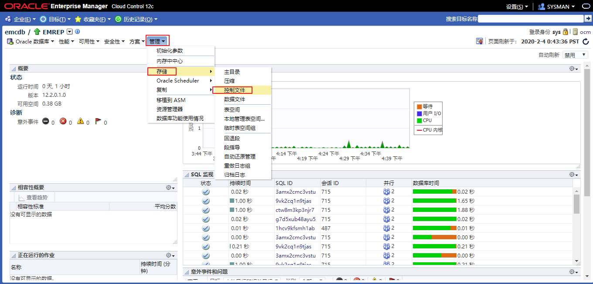
使用指定的凭据登录到数据库。
在控制文件页面，单击备份到跟踪文件。
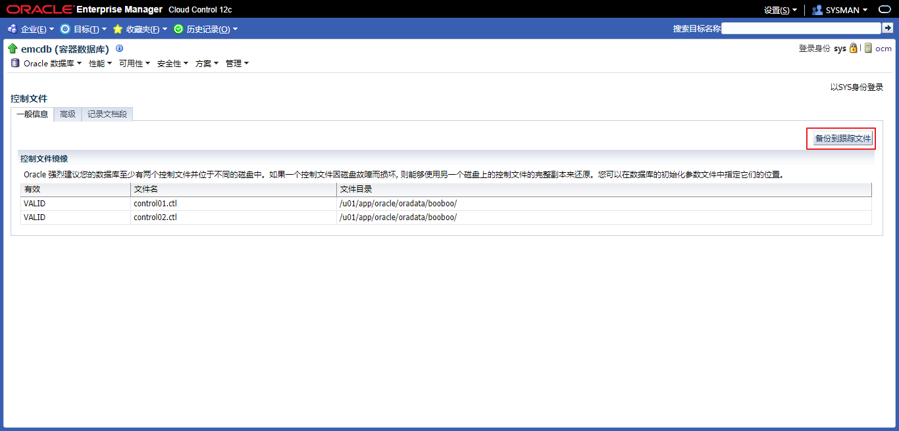
将显示一条更新消息。点击确定。
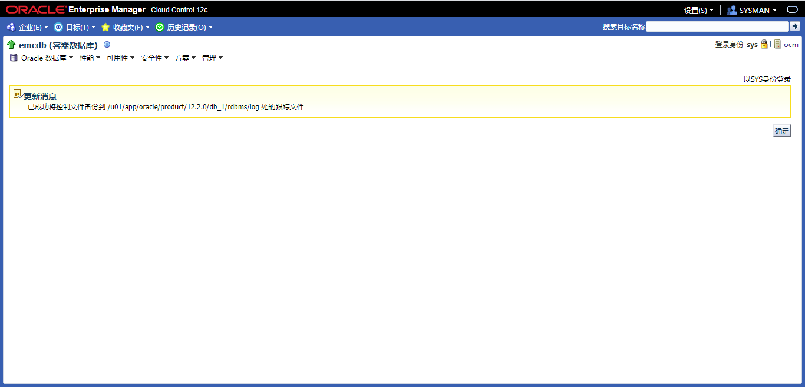
您还可以通过执行SQL命令来执行一个控制文件。以DBA1用户身份登录SQL*Plus，执行ALTER DATABASE BACKUP CONTROLFILE跟踪命令。
alter database backup controlfile to trace;
导航到
/u01/app/oracle/diag/rdbms/emcdb/emcdb/trace目录，查看警报日志的结尾，以验证跟踪文件的创建和文件的名称。cd /u01/app/oracle/diag/rdbms/emcdb/emcdb/trace
tail alert_orcl.log
2020-02-04T17:07:31.995723+08:00
alter database backup controlfile to trace
2020-02-04T17:07:32.055314+08:00
Backup controlfile written to trace file /u01/app/oracle/diag/rdbms/emcdb/emcdb/trace/emcdb_ora_32205.trc
Completed: alter database backup controlfile to trace
KnowledgePoint
实践14-2:配置控制文件和SPFILE的自动备份
Practice 14-2: Configuring Automatic Backups of the Control File and SPFILE
Overview
In this practice you configure automatic backups of the control file and server parameter file (SPFILE) when a backup of the database is made and when there is a structural change to the database.
在此实践中，在数据库备份和数据库结构更改时配置控制文件和服务器参数文件(SPFILE)的自动备份。
Task
- Return to the orcl database home page in Enterprise Manager Cloud Control.
- Select Availability > Backup & Recovery > Backup Settings.
- On the Backup Settings page, click the Policy tab.
- Select “Automatically backup the control file and server parameter file (SPFILE) with every backup and database structural change.”
- Scroll to the bottom of the page. In the Host Credentials section, select New. Enter oracle in the User Name field. Enter your OS password in the Password and Confirm Password fields. Click Test to ensure that you entered the values properly.
- Click Apply.
Practice
返回企业管理器云控制中的数据库主页。
选择可用性>备份和恢复>备份设置。
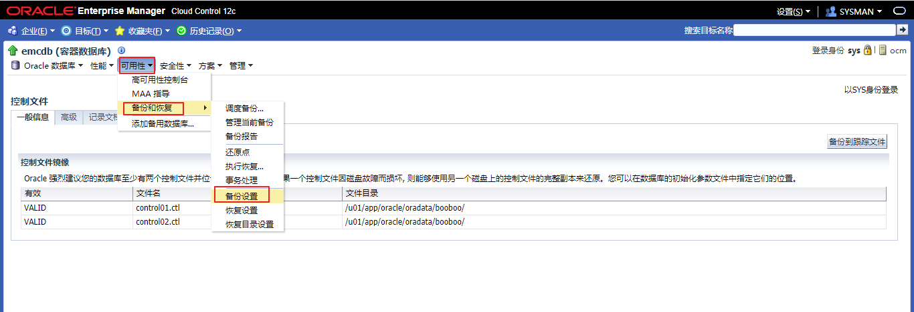
在备份设置页面，单击策略选项卡。
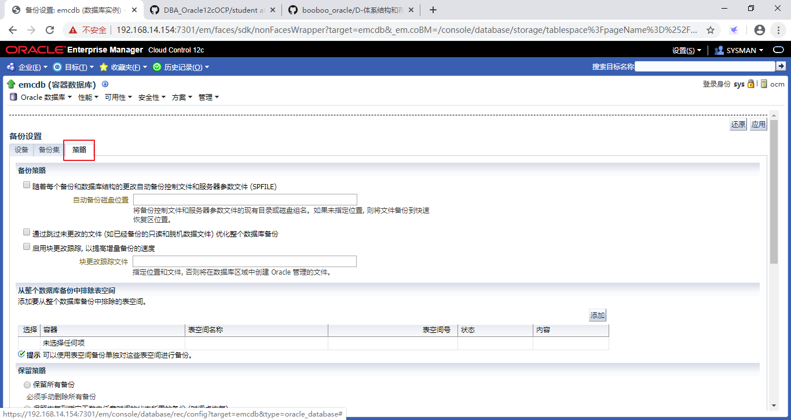
选择**随着每个备份和数据库结构更改自动备份控制文件和服务器参数文件(SPFILE) **。
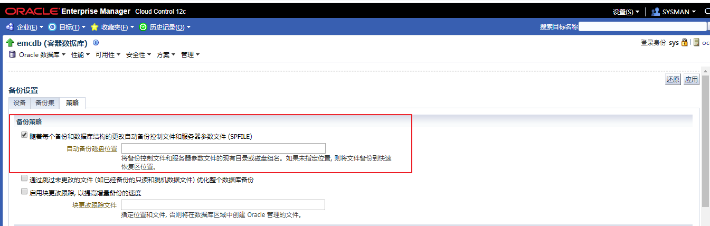
滚动到页面底部。在主机身份证明部分，选择新建。在用户名字段中输入oracle。在password中输入操作系统密码并确认密码字段。单击Test以确保正确输入了值。（如果已经配置过了，就选择已命名）
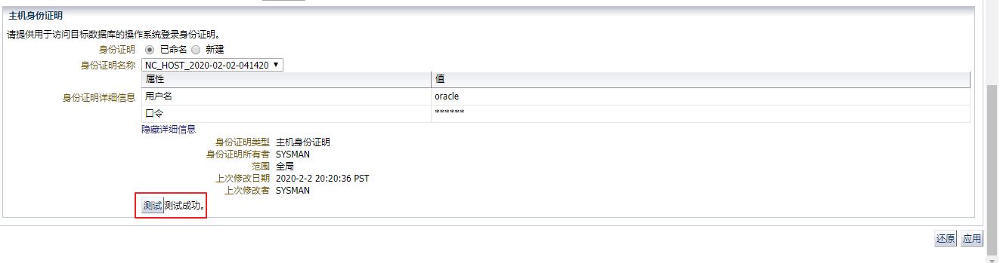
点击应用。
KnowledgePoint
实践14-3:创建一个完整的数据库备份
Practice 14-3: Creating a Whole Database Backup
Overview
In this practice, you back up your entire database, including the archived redo log files. The backup should be the base for an incremental backup strategy.
在这个实践中，需要备份整个数据库，包括归档的重做日志文件。备份应该是增量备份策略的基础。
Task
- In Enterprise Manager Cloud Control, select Availability > Backup & Recovery > Schedule Backup.
- In the Customized Backup section, select Whole Database. Confirm that the host credentials are set with oracle as the user name and password. Click Schedule Customized Backup.
- In the Backup Type section, select Full Backup and “Use as the base of an incremental backup strategy.”
- In the Backup Mode section, select Online Backup.
- In the Advanced section, select “Also back up all archived logs on disk” and “Delete all archived logs from disk after they are successfully backed up.” Click Next.
- On the Settings page, select Disk as the backup destination. Click Next.
- On the Schedule page, accept the defaults. Click Next.
- On the Review page, review the RMAN script and then click Submit Job.
- A confirmation message is displayed. Click View Job.
- Click the Refresh icon on the right side of page until you see that the job has completed successfully.
Practice
在Enterprise Manager Cloud Control中，选择可用性 > 备份和恢复 > 调度备份。
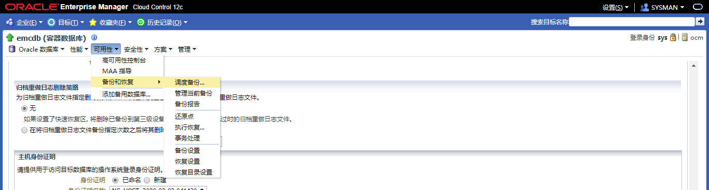
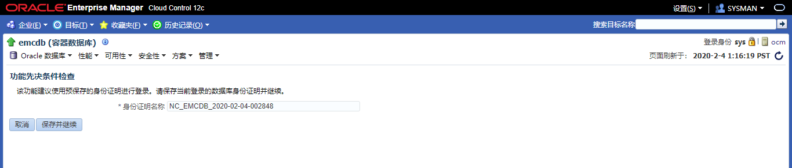
在自定义备份部分，选择整个数据库。确认主机凭据已设置为oracle用户名和密码。单击调度定制备份。
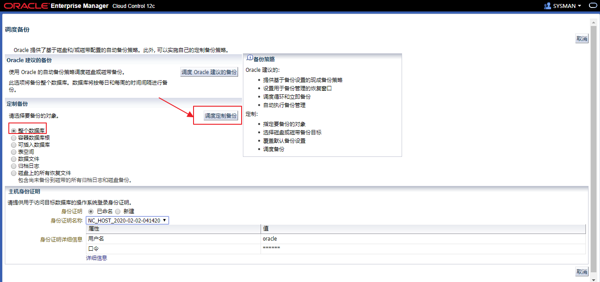
在备份类型部分，选择完全备份和 作为增量备份策略的基础。
在备份模式部分，选择联机备份。
在高级部分，选择同时备份磁盘上的所有归档日志和 成功备份磁盘上的所有归档日志后将其从磁盘删除，点击下一步。
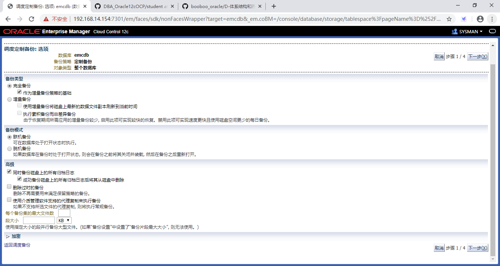
在设置页面，选择磁盘作为备份目的地。点击下一步。
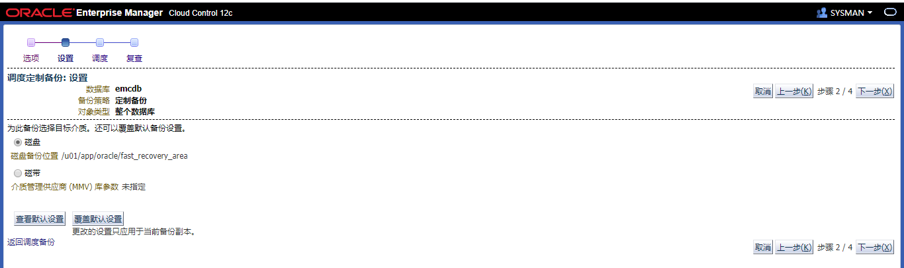
在调度页面上，接受默认设置。点击下一步。
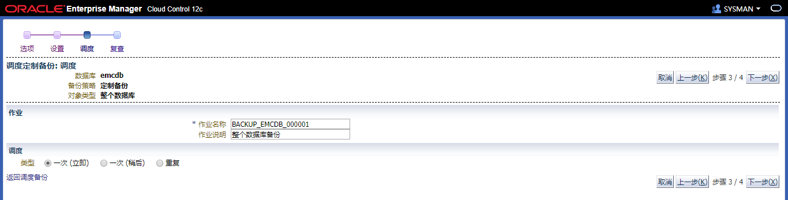
在复查页面上，审查RMAN脚本，然后单击提交作业。
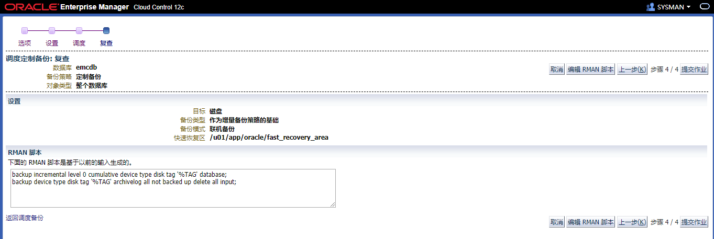
将显示一条确认消息。单击查看作业。
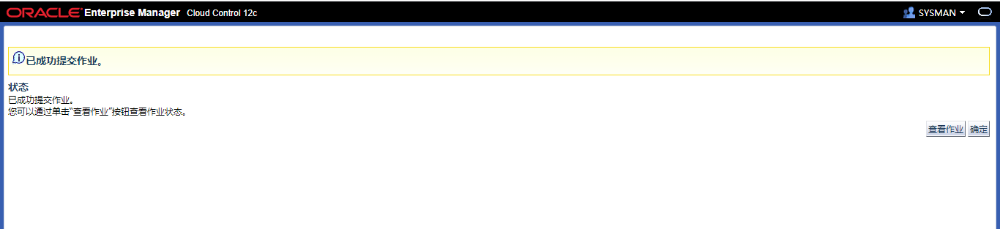
单击页面右侧的Refresh图标，直到看到任务成功完成。
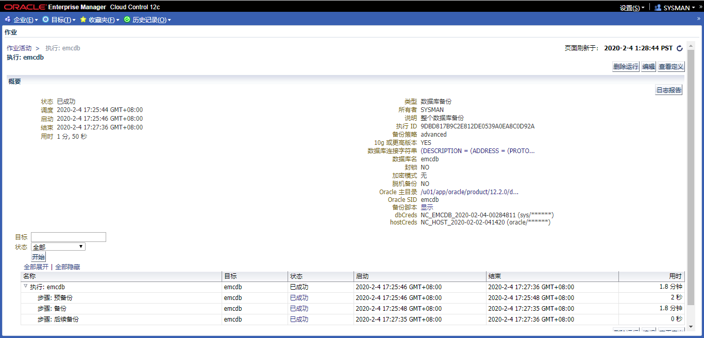
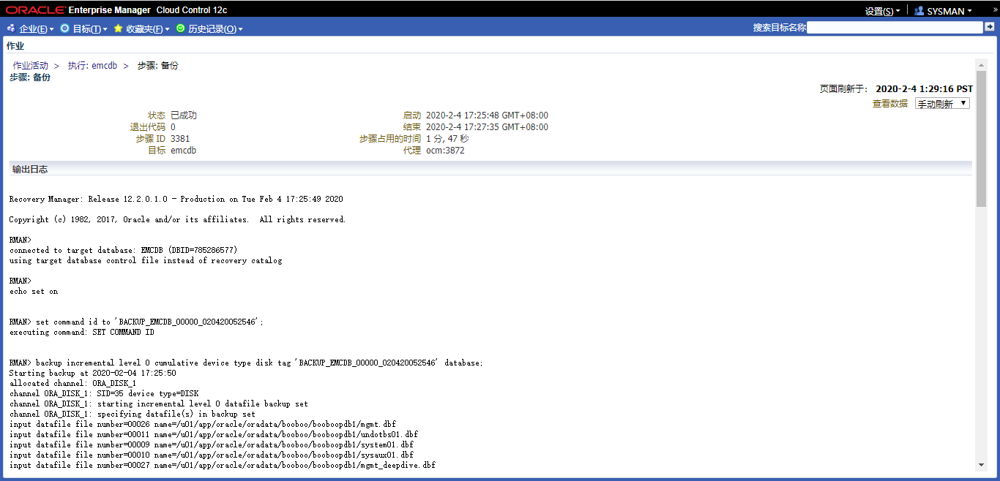
RMAN> list backup;
List of Backup Sets
===================
BS Key Type LV Size Device Type Elapsed Time Completion Time
------- ---- -- ---------- ----------- ------------ ---------------
1 Incr 0 1.75G DISK 00:00:46 04-FEB-20
BP Key: 1 Status: AVAILABLE Compressed: NO Tag: BACKUP_EMCDB_00000_020420052546
Piece Name: /u01/app/oracle/fast_recovery_area/EMCDB/96710507BCB024C7E0553CE49B3EAF97/backupset/2020_02_04/o1_mf_nnnd0_BACKUP_EMCDB_00000_0_h3lg4z3h_.bkp
List of Datafiles in backup set 1
Container ID: 3, PDB Name: EMREP
File LV Type Ckp SCN Ckp Time Abs Fuz SCN Sparse Name
---- -- ---- ---------- --------- ----------- ------ ----
9 0 Incr 3452953 04-FEB-20 NO /u01/app/oracle/oradata/booboo/booboopdb1/system01.dbf
10 0 Incr 3452953 04-FEB-20 NO /u01/app/oracle/oradata/booboo/booboopdb1/sysaux01.dbf
11 0 Incr 3452953 04-FEB-20 NO /u01/app/oracle/oradata/booboo/booboopdb1/undotbs01.dbf
12 0 Incr 3452953 04-FEB-20 NO /u01/app/oracle/oradata/booboo/booboopdb1/users01.dbf
25 0 Incr 3452953 04-FEB-20 NO /u01/app/oracle/oradata/booboo/booboopdb1/mgmt_ecm_depot1.dbf
26 0 Incr 3452953 04-FEB-20 3452975 NO /u01/app/oracle/oradata/booboo/booboopdb1/mgmt.dbf
27 0 Incr 3452953 04-FEB-20 NO /u01/app/oracle/oradata/booboo/booboopdb1/mgmt_deepdive.dbf
BS Key Type LV Size Device Type Elapsed Time Completion Time
------- ---- -- ---------- ----------- ------------ ---------------
2 Incr 0 1.13G DISK 00:00:22 04-FEB-20
BP Key: 2 Status: AVAILABLE Compressed: NO Tag: BACKUP_EMCDB_00000_020420052546
Piece Name: /u01/app/oracle/fast_recovery_area/EMCDB/backupset/2020_02_04/o1_mf_nnnd0_BACKUP_EMCDB_00000_0_h3lg6po0_.bkp
List of Datafiles in backup set 2
File LV Type Ckp SCN Ckp Time Abs Fuz SCN Sparse Name
---- -- ---- ---------- --------- ----------- ------ ----
1 0 Incr 3453177 04-FEB-20 NO /u01/app/oracle/oradata/booboo/system01.dbf
3 0 Incr 3453177 04-FEB-20 NO /u01/app/oracle/oradata/booboo/sysaux01.dbf
4 0 Incr 3453177 04-FEB-20 NO /u01/app/oracle/oradata/booboo/undotbs01.dbf
7 0 Incr 3453177 04-FEB-20 NO /u01/app/oracle/oradata/booboo/users01.dbf
BS Key Type LV Size Device Type Elapsed Time Completion Time
------- ---- -- ---------- ----------- ------------ ---------------
3 Incr 0 512.22M DISK 00:00:11 04-FEB-20
BP Key: 3 Status: AVAILABLE Compressed: NO Tag: BACKUP_EMCDB_00000_020420052546
Piece Name: /u01/app/oracle/fast_recovery_area/EMCDB/93219DF8F4031975E0553CE49B3EAF97/backupset/2020_02_04/o1_mf_nnnd0_BACKUP_EMCDB_00000_0_h3lg7htl_.bkp
List of Datafiles in backup set 3
Container ID: 2, PDB Name: PDB$SEED
File LV Type Ckp SCN Ckp Time Abs Fuz SCN Sparse Name
---- -- ---- ---------- --------- ----------- ------ ----
5 0 Incr 1441296 03-NOV-19 NO /u01/app/oracle/oradata/booboo/pdbseed/system01.dbf
6 0 Incr 1441296 03-NOV-19 NO /u01/app/oracle/oradata/booboo/pdbseed/sysaux01.dbf
8 0 Incr 1441296 03-NOV-19 NO /u01/app/oracle/oradata/booboo/pdbseed/undotbs01.dbf
BS Key Type LV Size Device Type Elapsed Time Completion Time
------- ---- -- ---------- ----------- ------------ ---------------
4 Full 17.94M DISK 00:00:01 04-FEB-20
BP Key: 4 Status: AVAILABLE Compressed: NO Tag: TAG20200204T172727
Piece Name: /u01/app/oracle/fast_recovery_area/EMCDB/autobackup/2020_02_04/o1_mf_s_1031506047_h3lg805t_.bkp
SPFILE Included: Modification time: 04-FEB-20
SPFILE db_unique_name: EMCDB
Control File Included: Ckp SCN: 3453270 Ckp time: 04-FEB-20
BS Key Size Device Type Elapsed Time Completion Time
------- ---------- ----------- ------------ ---------------
5 91.75M DISK 00:00:00 04-FEB-20
BP Key: 5 Status: AVAILABLE Compressed: NO Tag: BACKUP_EMCDB_00000_020420052546
Piece Name: /u01/app/oracle/fast_recovery_area/EMCDB/backupset/2020_02_04/o1_mf_annnn_BACKUP_EMCDB_00000_0_h3lg8359_.bkp
List of Archived Logs in backup set 5
Thrd Seq Low SCN Low Time Next SCN Next Time
---- ------- ---------- --------- ---------- ---------
1 32 3399092 04-FEB-20 3415518 04-FEB-20
1 33 3415518 04-FEB-20 3415523 04-FEB-20
1 34 3415523 04-FEB-20 3415528 04-FEB-20
1 35 3415528 04-FEB-20 3415533 04-FEB-20
1 36 3415533 04-FEB-20 3415538 04-FEB-20
1 37 3415538 04-FEB-20 3453307 04-FEB-20
BS Key Type LV Size Device Type Elapsed Time Completion Time
------- ---- -- ---------- ----------- ------------ ---------------
6 Full 17.94M DISK 00:00:00 04-FEB-20
BP Key: 6 Status: AVAILABLE Compressed: NO Tag: TAG20200204T172732
Piece Name: /u01/app/oracle/fast_recovery_area/EMCDB/autobackup/2020_02_04/o1_mf_s_1031506052_h3lg84pn_.bkp
SPFILE Included: Modification time: 04-FEB-20
SPFILE db_unique_name: EMCDB
Control File Included: Ckp SCN: 3453372 Ckp time: 04-FEB-20
KnowledgePoint
在Enterprise Manager Cloud Control中，通过调度备份进行数据库在线热备之全库备份
总结
Enterprise Manager Cloud Control中关于备份的操作个人理解为是RMAN的图形化界面。
备份控制文件
alter database backup controlfile to trace;配置控制文件和SPFILE的自动备份
CONFIGURE CONTROLFILE AUTOBACKUP ON;创建一个完整的数据库备份
backup incremental level 0 cumulative device type disk tag '%TAG' database;
backup device type disk tag '%TAG' archivelog all not backed up delete all input;